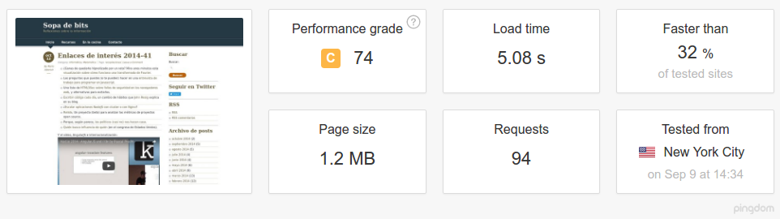
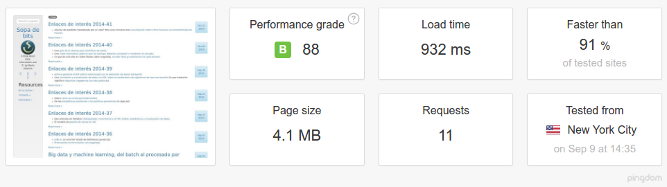

Volver, con cambios y sin prisa
Casi dos años han pasado desde el último artículo, pero incluso antes que se publicara, la vida ya me estaba cambiando rápidamente. Vuelvo ahora con algunos cambios, y también consciente que mi tiempo es mucho menor que hace dos años. ¿Por qué este silencio? En una palabra: paternidad. 18 meses tiene la principal responsable de mi falta de tiempo, pero también otros varios cambios que prefería priorizar. Al fin y al cabo mi intención con el blog es disfrutar explicando, y dejar anotadas cosas que de otra manera se me olvidarían.
De Wordpress a Jekyll
Wordpress es una plataforma fantástica, con una comunidad enorme, y aunque debo reconocer que la estructura de su código fuente es a mi parecer algo caótica, es innegable su contribución al ecosistema open source. Pero para mí, al menos por ahora, se acabó Wordpress. Me paso a Jekyll. Los motivos son varios, pero siempre para mi caso:
- Más seguro: en la medida que sólo es HTML básico.
- Me resulta fácil escribir en markdown (o kramdown). Con cualquier bloc de notas puedo escribir un post, aunque también hay alternativas que simplifican esta fase.
- Ágil y fácil de usar para mis objetivos, incluso planteando la idea de integrar gráficos interactivos, pequeñas aplicaciones, visualizaciones y demás.
- Se puede proporcionar fuentes de datos en formato JSON/Yaml/CSV, con lo que es fácil integrar visualizaciones interactivas con datos estáticos.
Hay otra razón derivada de lo anterior, y es que la simplificación hace al blog muy rápido. Realizando una prueba con pingdom tools con la instalación no definitiva de Jekyll, y la diferencia es notable. Con wordpress:

Y con Jekyll:

La valoración en Jekyll no llega a 100 porque un solo archivo hace saltar la alarma porque no tiene un caché largo. Y resulta que ese archivo es el de google analytics, con lo que en realidad la valoración es de 100 para todo lo que puedo controlar.
También es cierto que hay 94 hits en wordpress contra 11 en jekyll, reducción derivada de la simplificación de funcionalidades. En realidad Jekyll puede agrupar todos los CSS/JS en un solo archivo, por lo que el número de peticiones podría reducirse un poco más. También se puede apreciar el mayor peso de la página en jekyll, pero eso es porque en el momento de la prueba no tenía activada la compresión gzip: en ese caso el peso se reduce a 1.0MB y la calificación pasa a 98/100.
¿Valía la pena mantener toda esa complejidad de plugins para un blog así? Creo que no. PHP, MySQL y cierta complejidad en la configuración de Apache/Nginx quedan fuera. Probablemente esta diferencia se notará en el posicionamiento de los resultados en las búsquedas, aunque aún es pronto para sacar conclusiones. También es cierto que ahora tengo Ruby, el propio jekyll y sus plugins,... Pero lo principal es que no quedan expuestos a ataques externos, y que el control es mucho más sencillo.
¿Tiene contrapartidas? Sí, algunas:
- No hay formulario de contacto. Pero teniendo Twitter y LinkedIn, eso tampoco es tan necesario.
- Tampoco comentarios: Sé que hay alternativas como Disqus, pero hay cuestiones que no tengo claras sobre la gestión y responsabilidad de los comentarios. Entre eso y que mi blog no tiene demasiados comentarios, me llevan a pensar que no lo necesito al menos por ahora.
- A priori no hay búsqueda, aunque hay soluciones que indexan el contenido y generan un json con el índice de búsqueda. Está por ver qué relevancia proporciona.
Paso a HTTPS
Esa es otra cosa que comentaré más adelante. Por ahora, sólo mencionar que si tienes un blog o sitio web alojado en tu propio servidor, puedes echar mano del projecto Let's encrypt, una autoridad certificadora soportada por muchos grandes del sector y que nos permite usar certificados SSL de forma gratuíta. Un post probablemente caiga al respecto.
Y ahora, qué?
Pues lo dicho, con la calma. Probablemente posts muy cortos y muy enfocados, pero también mucho más potencial para generar demos interactivas, visualizaciones y otros elementos que antes se me complicaban porque tenía que integrarlos en Wordpress.
El resto, como siempre, se irá viendo con el tiempo.
© 2007 and beyond Mario Alberich, licensed under CC-BY-SA unless stated otherwise.